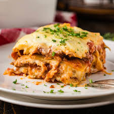

Lasagna Recipe
Lasagna
Home

Lasagna is a classic Italian dish made of layers of pasta,
rich meat sauce, creamy cheese, and baked until hot and bubbly.
This recipe is hearty, flavorful, and perfect for family dinners
or meal prep throughout the week.
Ingredients
- 1 pound ground beef
- 1 onion, chopped
- 2 cloves garlic, minced
- 1 (24-ounce) jar marinara sauce
- 1 (15-ounce) container ricotta cheese
- 2 cups shredded mozzarella cheese
- 1/2 cup grated Parmesan cheese
- 12 lasagna noodles, cooked and drained
- Salt and pepper to taste
Steps
- Preheat the oven to 375°F (190°C).
- Cook the lasagna noodles according to the package instructions.
- In a large skillet, brown the ground beef and drain excess fat.
- Add the onion and garlic, and cook until softened.
- Stir in the marinara sauce and season with salt and pepper.
- In a mixing bowl, combine the ricotta cheese and half of the mozzarella cheese.
- Assemble the lasagna by layering the noodles, meat sauce, and cheese mixture.
- Sprinkle the remaining mozzarella cheese on top.
- Bake for 30-35 minutes, or until bubbly and golden brown.